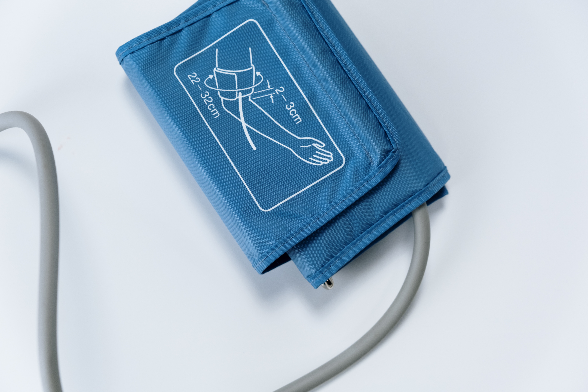
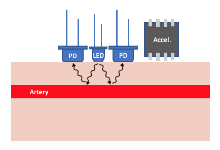
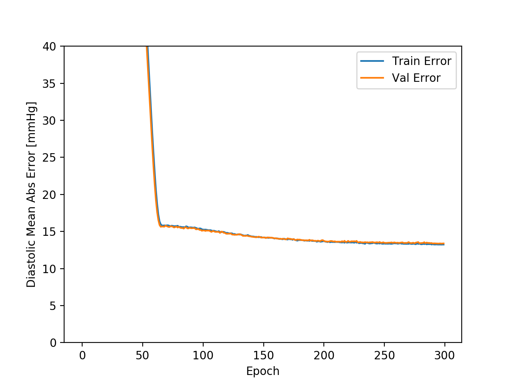
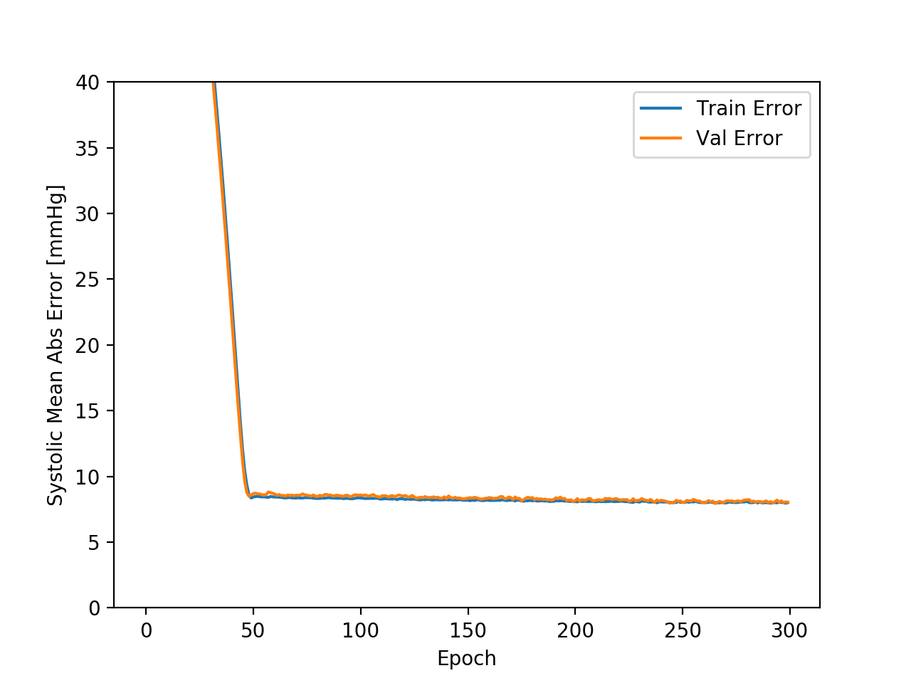

Design of a New Blood-Pressure Monitor

Introduction
Technology in the field of blood pressure monitoring has remained largely unchanged since the original sphygomanometer designs. This means they suffer from many of the same drawbacks and biases inherent to an occlusive method of blood pressure measurement. Such limitations and biases include, poorly fitting cuffs, cuff-inflation hypertension, and the low measurement frequency of a cuffed blood pressure monitor design. The purpose of this design project was to design a new blood pressure monitor that would overcome many of the challenges faced by traditional blood pressure monitors.
Research and Selection
A few novel methods of blood pressure measurement were explored including using photoplethysmography (PPG), the inherent magnetism of blood, and modern ultrasound technology. For various reasons including the cost of components, size, and amount of supporting research, the PPG method was determined to be most promising.
What is PPG?
A PPG signal is a light signal received by shining light of a certain wavelength at a given part of the body. In transmittance mode PPG such as with a pulse oximeter, the light that makes it through (typically your index finger) is measured. In reflectance mode PPG such as in modern wrist-watch heart-rate monitors, the amount of light reflected is measured.
The PPG Method
The working princple of PPG in a blood pressure monitoring context is in its ability to detect changes in the reflectance or transmittance of the human body based on variations in local blood volume over time. When placed over an area of easily visible veins or arteries, the PPG signal recieved relates to the cyclic expansion of arteries and blood vessels in response to the pressure wave of blood from the heart. By taking two PPG signals from different locations on the body, such as along the forearm, the time delay between these signals and thus the pulse transit time (PTT) of the blood pressure wave can be determined. PTT has been found to be a correlate for blood pressure and has been proposed as an alternative method of blood pressure measurement.
A schematic of a sample blood pressure measurement device using PPG is shown below:
A schematic of a sample blood pressure measurement device using PPG is shown below:

A schematic of an LED along with two photodiodes to detect the reflected light. An accelerometer is included to account for motion artifacts in signal
Testing and Results
As no budget was allocated to build the designed blood pressure monitor, I decided to use an open source PPG-Blood-Pressure dataset to evaluate the viability of predicting blood pressure with a PPG signal. One key drawback with the dataset used was that it only contained a single continuous PPG signal meaning that the PTT, a key correlate for blood pressure, was not present. Therefore the testing done only represents the ability of a single PPG signal to predict blood pressure.
With the open-source data, a simple neural network was used to try to relate the PPG signal alone to blood pressure. The results of this neural network are given below:
With the open-source data, a simple neural network was used to try to relate the PPG signal alone to blood pressure. The results of this neural network are given below:

A plot of the network error for prediction diastolic blood pressure.

A plot of the network error for prediction systolic blood pressure.
Conclusions
Although the neural network was unable to accurately predict blood pressure from the PPG signal alone, the PPG signal was missing some key information, mainly the PTT, meaning that this result is not completely unexpected. Future work into this area of study would involve ensuring PTT was present as a training parameter along with the PPG signal.
More Info
To read more in depth about this project, please check out the full thesis paper and code used in the following git repo here.